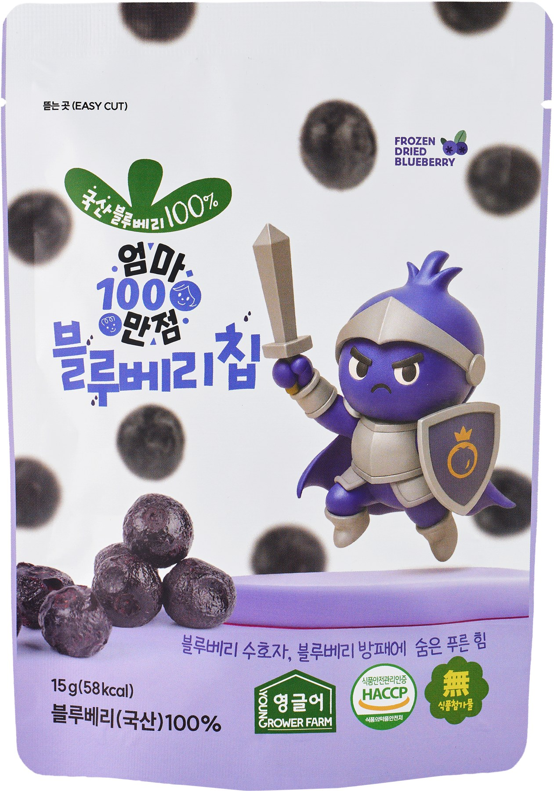
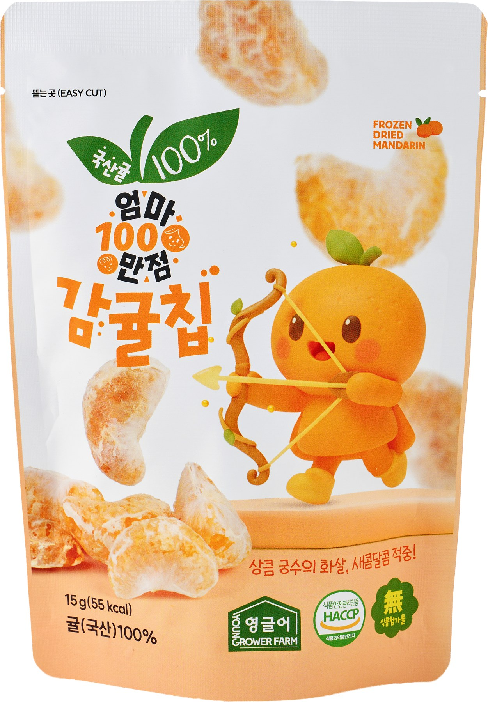

EXPORT PRODUCT FOCUS
Four fruits.
Four fruits.
A crisp, freeze-dried format.
Our fruit chip range brings together blueberry, Seola peach, strawberry and mandarin in individual pouches. The fruit is freeze-dried to create a crisp snack.

Blueberry Chips
15 g

Seola Peach Chips
15 g

Strawberry Chips
15 g

Mandarin Chips
15 g

RAW-MATERIAL ORIGINS
Our fruit and selected fruit ingredients.
Blueberries and peaches are grown by Young Grower Farm. Strawberries and mandarins are purchased ingredients. The four-variety range gives buyers a clear view of the fruit sources behind the products.

PACK FORMATS
Individual pouches and gift presentation.
The range includes individual fruit pouches and gift-box presentation. Please discuss the required assortment, quantities and destination with our team.
Request product details- Product range
- Blueberry · Seola peach · Strawberry · Mandarin
- Pack size
- 15 g per individual fruit chip pouch
- Process
- Freeze-drying
- Buyer review
- Contact us for current ingredients, shelf life, storage instructions and available pack configurations.